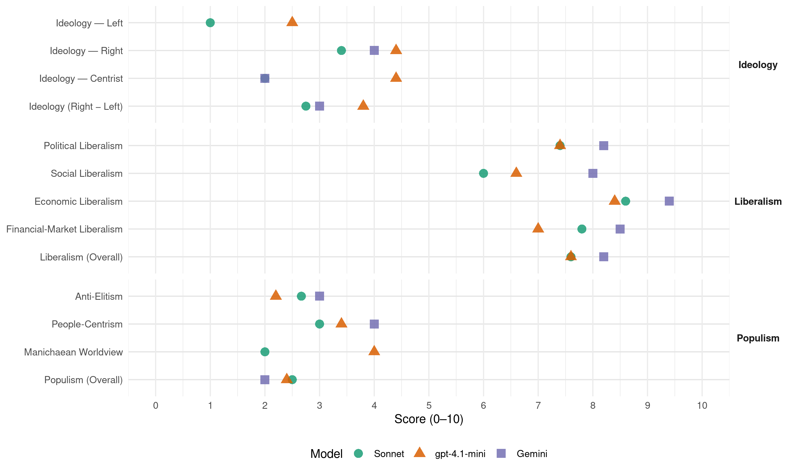

FrP (Norway, 2005)
manifesto_id 12951_200509
Get full text: This site shows derived annotations and short verbatim quotes only. The full manifesto text is © Manifesto Project / WZB — obtain it via manifesto-project.wzb.eu using the manifesto_id above.
Headline scores
| Dimension | Sonnet | gpt-4.1-mini | Gemini |
|---|---|---|---|
| Populism (Overall) | 2.5 | 2.4 | 2.0 |
| Anti-Elitism | 2.7 | 2.2 | 3.0 |
| People-Centrism | 3.0 | 3.4 | 4.0 |
| Manichaean Worldview | 2.0 | 4.0 | – |
| Ideology (Right − Left) | 2.8 | 3.8 | 3.0 |
| Liberalism (Overall) | 7.6 | 7.6 | 8.2 |
| Political Liberalism | 7.4 | 7.4 | 8.2 |
| Social Liberalism | 6.0 | 6.6 | 8.0 |
| Economic Liberalism | 8.6 | 8.4 | 9.4 |
| Financial-Market Liberalism | 7.8 | 7.0 | 8.5 |
Evidence per dimension
Economic Liberalism
Gemini · score 10.0 · verified · chunk 1
“markedsøkonomi der den enkelte fritt kan operere”
arbeider for markedsøkonomi der den enkelte fritt kan operere innenfor generelle
Gemini · score 10.0 · verified · chunk 2
“Motarbeide proteksjonisme og fremme frihandel”
rederiene best. 3.Legge opp rammebetingelser som fremmer vekst for norsk maritim virksomhet. 4.Motarbeide proteksjonisme og fremme frihandel. 5.Gi norske sjøfolk samme
Gemini · score 9.0 · verified · chunk 3
“bygge ned handelsbarrie-rene mot utlandet”
bygge på prinsippene om likeverd og frihandel. Norge bør derfor snarest bygge ned handelsbarrie-rene mot utlandet. U-hjelpen må opphøre
Gemini · score 9.0 · verified · chunk 4
“reell konkurranse mellom offentlige og private”
sykehusrefor-men at det skulle utvikles reell konkurranse mellom offentlige og private tjenesteytere. Dette kan best gjøres
Gemini · score 9.0 · verified · chunk 5
“etablere et markedsstyrt transportmarked”
nødvendige for å etablere et markedsstyrt transportmarked. Myndighetenes rolle begrenses
gpt-4.1-mini · score 9.0 · verified · chunk 1
“Fremskrittspartiet vil føre en økonomisk politikk som legger til rette for økonomisk vekst, som vil gi høyere velferdsnivå for folk flest gjennom høyere disponible inntekter og et bedre offentlig tjenestetilbud.”
Markedsøkonomi for fritt næringsliv og velstand Fremskrittspartiets mål vil alltid være – sterk nedsettelse av skatter, avgifter og offentlige inngrep. At vi er i stand til å bruke sunn fornuft i kombinasjon med kunnskaper, samt at vi ikke låser økonomien i teser og dogmer, er en styrke. Noen hevder at vår økonomiske politikk er laget og fremført av tryllekunstnere, bløffmakere og løgnere. Våre politiske motstan- dere har selvsagt som oppgave å så tvil om våre løsninger.
gpt-4.1-mini · score 9.0 · verified · chunk 2
“Fremskrittspartiet vil liberalisere en rekke restriksjoner for handelsnæringen”
Fremskrittspartiet vil liberalisere en rekke restriksjoner for handelsnæringen, herunder åpningstidsbestemmelser, konsesjons-, løyve- og bevillingsbestemmelser, samt restriksjoner på etablering og lokalisering av nye virksomheter. Fremskrittspartiet vil tillate fri eksport, fri import og fri omsetning av alle lovlige varer.
gpt-4.1-mini · score 8.0 · verified · chunk 3
“frihandel ved å bygge ned importrestriksjoner som blant annet rammer u-land”
FREMSKRITTSPARTIET VIL: 1.Innføre frihandel ved å bygge ned importrestriksjoner som blant annet rammer u-land.
gpt-4.1-mini · score 8.0 · verified · chunk 4
“Stykkprisfinansiering har allerede vist at det kan gi gode effekter i kampen mot helsekøene.”
Fremskrittspartiet har omsider fått gjennomført fritt sykehusvalg i hele landet når det gjelder offentlige sykehus, og vil arbeide for at dette også skal gjelde private sykehus og institusjoner. Stykkprisfinansiering har allerede vist at det kan gi gode effekter i kampen mot helsekøene.
gpt-4.1-mini · score 8.0 · verified · chunk 5
“konkurranse fremmer kvalitet”
Fremskrittspartiet mener at konkurranse fremmer kvalitet, og vi ser det som positivt at konkurranse blir en integrert del av rammevilkårene for norske forskere, samtidig som forskerne også må gis bedre og mer langsiktige vilkår.
Sonnet · score 9.0 · verified · chunk 1
“sterk nedsettelse av skatter, avgifter og offentlige inngrep”
Fremskrittspartiets hovedmål er sterk ned-settelse av skatter, avgifter og offentlige inngrep.
Sonnet · score 9.0 · verified · chunk 2
“Motarbeide proteksjonisme og fremme frihandel”
FREMSKRITTSPARTIET VIL: 4. Motarbeide proteksjonisme og fremme frihandel.
Sonnet · score 8.0 · verified · chunk 3
“Frihandel er den beste form”
Frihandel er den beste form for global arbeidsdeling med gjensidige fordeler av samhandel.
Sonnet · score 8.0 · verified · chunk 4
“reell konkurranse basert på faglighet og pris”
Det skal innføres reell konkurranse basert på faglighet og pris mellom de offentlige og private tilbyderne av tjenester.
Sonnet · score 9.0 · verified · chunk 5
“etablere et markedsstyrt transportmarked”
Det viktigste moderniserings- og fornelsesverktøyet er å gjennomføre de lov- og forskriftsendringene som er nødvendige for å etablere et markedsstyrt transportmarked.
Financial-Market Liberalism
Gemini · score 10.0 · verified · chunk 1
“Kapitalmarkedet må være friest mulig”
Kapitalmarkedet Kapitalmarkedet må være friest mulig, slik at kapitalen
Gemini · score 9.0 · verified · chunk 2
“selge statens direkte eierandeler i norske banker”
offentlig oppgave å drive bankvirksomhet og vil derfor gradvis selge statens direkte eierandeler i norske banker og finansinstitusjoner.
Gemini · score 8.0 · verified · chunk 3
“kapital som flyter fritt over landegrenser”
Vi har verdens-omspennende markeder, kapital som flyter fritt over landegrenser uten å føle seg bundet til noe bestemt land
Gemini · score 7.0 · verified · chunk 5
“Renter på studielån settes lik markedsrenten”
dokumentert av utdanningsinstitusjonen. Renter på studielån settes lik markedsrenten. FREMSKRITTSPARTIET
gpt-4.1-mini · score 8.0 · verified · chunk 1
“Fremskrittspartiet vil ha en fri og reell konkurranse mellom banker og andre kreditt- og finansinstitusjoner.”
Tjenesteytende næringer … 11.Ha et uavhengig kredittilsyn som skal sikre soliditeten i norsk finansvesen. 12.Ha en fri og reell konkurranse mellom banker og andre kreditt- og finansinstitusjoner.
gpt-4.1-mini · score 8.0 · verified · chunk 2
“Fremskrittspartiet vil arbeide for at norsk lovgivning og regulering harmoniseres”
Norsk finansnæring er fortsatt underlagt særnorske og konkurransevridende rammebetingelser som hindrer nødvendig restrukturering og omorganisering. Fremskrittspartiet vil arbeide for at norsk lovgivning og regulering i størst mulig grad harmoniseres med andre europeiske land.
gpt-4.1-mini · score 6.0 · verified · chunk 3
“NORFUND som yter kommersielle lån til lokale investorer i u-landet”
Dette bør kunne gjøres gjennom et reorganisert NORFUND som yter kommersielle lån til lokale investorer i u-landet for å skape den lokale kapitalinnsats som vanligvis ikke finnes, men hvor lånene i slike tilfeller betales inn til det felles firma med norske investorer og ikke til den lokale deltager direkte, og som samtidig kan stille garantier for finansieringen av kjøp av nødvendig utstyr.
gpt-4.1-mini · score 6.0 · verified · chunk 4
“Folketrygden skal fungere som befolkningens forsikringsselskap og dekke helse- og omsorgsutgifter for folketrygdens medlemmer.”
Stykkprisen/ISF skal betales av folketrygden på vegne av hvert enkelt medlem. Folketrygden skal fungere som befolkningens forsikringsselskap og dekke helse- og omsorgsutgifter for folketrygdens medlemmer.
gpt-4.1-mini · score 7.0 · verified · chunk 5
“SkatteFunn er etter Fremskrittspartiets mening et godt tiltak som gir incentiver til økt forskningsinnsats”
SkatteFunn er etter Fremskrittspartiets mening et godt tiltak som gir incentiver til økt forskningsinnsats fra næringslivet. Næringslivet dekker 80 % av FoU-kostnadene, mens det offentlige dekker 20 % gjennom skattefradraget.
Sonnet · score 9.0 · verified · chunk 1
“Kapitalmarkedet må være friest mulig”
Kapitalmarkedet må være friest mulig, slik at kapitalen kanaliseres dit hvor den gjør størst nytte for seg.
Sonnet · score 9.0 · verified · chunk 2
“fri og reell konkurranse mellom banker”
Ha en fri og reell konkurranse mellom banker og andre kreditt- og finansinstitusjoner.
Sonnet · score 7.0 · verified · chunk 3
“kapital som flyter fritt over landegrenser”
Vi har verdensomspennende markeder, kapital som flyter fritt over landegrenser uten å føle seg bundet til noe bestemt land
Sonnet · score 7.0 · verified · chunk 4
“private pensjonsforsikringer eller andre spareformer”
stimuleres til å ytterligere sikre sin alderdom gjennom private pensjonsforsikringer eller andre spareformer. Dette kan gjøres både på individuell basis
Sonnet · score 7.0 · verified · chunk 5
“Renter på studielån settes lik markedsrenten”
Studenter med særskilte behov for ekstra tid til å sluttføre en påbegynt utdanning, bør ha muligheten til å kunne oppnå tilleggslån når dette er dokumentert av utdanningsinstitusjonen. Renter på studielån settes lik markedsrenten.
Political Liberalism
Gemini · score 9.0 · verified · chunk 1
“Domstolene skal være uavhengige institusjoner”
sikre enkeltmenneskets rettssikkerhet. Domstolene må være uavhengige institusjoner som skal settes
Gemini · score 8.0 · verified · chunk 2
“uavhengige institusjoner som er i stand”
Domstolene må være uavhengige institusjoner som er i stand til å sikre rask og rettferdig
Gemini · score 8.0 · verified · chunk 3
“rettssikkerhet, ytringsfrihet, eiendomsrett, organisasjons- frihet”
Et velfungerende demokratisk samfunn baseres på verdier som rettssikkerhet, ytringsfrihet, eiendomsrett, organisasjons- frihet, likestilling og rett til å velge ektemake.
Gemini · score 7.0 · verified · chunk 4
“nødvendige demokratiske prosesser i vårt samfunn”
et nytt samfunnsfag/demokratifag der elevene i større grad lærer om nødvendige demokratiske prosesser i vårt samfunn, respekt for liv og helse
Gemini · score 9.0 · verified · chunk 5
“forutsetning for demokratiet, ytringsfriheten og rettsstaten”
En fri og uavhengig presse er en forutsetning for demokratiet, ytringsfriheten og rettsstaten. For å sikre
gpt-4.1-mini · score 9.0 · verified · chunk 1
“Fremskrittspartiet vil verne om de rettigheter som Grunnloven legger opp til, slike som eiendomsrett, næringsfrihet, den personlige frihet og ytringsfrihet.”
Rettigheter Fremskrittspartiet vil verne om de rettigheter som Grunnloven legger opp til, slike som eiendomsrett, næringsfrihet, den personlige frihet og ytringsfrihet. Fremskrittspartiet vil også verne om trosfriheten og retten til å være organisert eller uorganisert.
gpt-4.1-mini · score 7.0 · verified · chunk 2
“Norge skal bli et informasjonssamfunn for alle”
Norge skal bli et informasjonssamfunn for alle. For å kunne nå et slikt mål må vi satse på innovasjon og vekst i privat sektor, full sysselsetting, regional utvikling, demokrati og muligheter for alle, høy livskvalitet i alle faser av livet og effektiv offentlig forvaltning.
gpt-4.1-mini · score 7.0 · verified · chunk 3
“rettssikkerhet, ytringsfrihet, eiendomsrett, organisasjonsfrihet, likestilling”
Et velfungerende demokratisk samfunn baseres på verdier som rettssikkerhet, ytringsfrihet, eiendomsrett, organisasjonsfrihet, likestilling og rett til å velge ektemake.
gpt-4.1-mini · score 7.0 · verified · chunk 4
“Folketrygden administreres av Rikstrygdeverket, som må omorganiseres.”
Folketrygden bør deles i to hoveddeler; helse og pensjon. Hver av de to sektorene får øremerkede inntekter og en rettighets-basert utgiftsside. Etter en omorganiserings-og overgangstid baseres finansieringen på at utgiftene danner grunnlaget for fastset-telsen av inntektene. Folke-trygden administreres av Rikstrygdeverket, som må omorganiseres.
gpt-4.1-mini · score 7.0 · verified · chunk 5
“En fri og uavhengig presse er en forutsetning for demokratiet”
En fri og uavhengig presse er en forutsetning for demokratiet, ytringsfriheten og rettsstaten. For å sikre konkurranse og mangfold i mediene vil Fremskrittspartiet arbeide for størst mulig grad av etablerings-frihet i medienæringen.
Sonnet · score 8.0 · verified · chunk 1
“Domstolene skal sikre at loven ikke anvendes i strid med Grunnloven”
Domstolene skal sikre at loven ikke anvendes i strid med Grunnloven, og at Regjeringen og offentlig forvaltning ikke gir pålegg uten hjemmel i lov.
Sonnet · score 7.0 · verified · chunk 2
“demokrati og muligheter for alle”
vi satse på innovasjon og vekst i privat sektor, full sysselsetting, regional utvikling, demokrati og muligheter for alle, høy livskvalitet i alle faser av livet
Sonnet · score 7.0 · verified · chunk 3
“rettssikkerhet, ytringsfrihet, eiendomsrett”
Et velfungerende demokratisk samfunn baseres på verdier som rettssikkerhet, ytringsfrihet, eiendomsrett, organisasjonsfrihet, likestilling og rett til å velge ektemake
Sonnet · score 7.0 · verified · chunk 4
“demokratiske prosesser i vårt samfunn”
samfunnsfag/demokratifag der elevene i større grad lærer om nødvendige demokratiske prosesser i vårt samfunn, respekt for liv og helse
Sonnet · score 8.0 · verified · chunk 5
“fri og uavhengig presse er en forutsetning for demokratiet”
En fri og uavhengig presse er en forutsetning for demokratiet, ytringsfriheten og rettsstaten. For å sikre konkurranse og mangfold i mediene
Liberalism (Overall)
Gemini · score 9.0 · verified · chunk 1
“Fremskrittspartiet er et liberalistisk parti”
Fremskrittspartiets prinsipper Fremskrittspartiet er et liberalistisk parti. Det bygger på
Gemini · score 9.0 · verified · chunk 2
“Markedsøkonomi for fritt næringsliv og velstand”
konkurransedyktige rammevilkår. Markedsøkonomi for fritt næringsliv og velstand Norske restriksjoner på driftsformer
Gemini · score 7.0 · verified · chunk 3
“Som et liberalistisk parti er Fremskrittspartiet”
preger også Fremskrittspartiets syn på utviklingshjelp. Som et liberalistisk parti er Fremskrittspartiet det første til å ta avstand fra
Gemini · score 8.0 · verified · chunk 4
“reell konkurranse mellom offentlige og private”
sykehusrefor-men at det skulle utvikles reell konkurranse mellom offentlige og private tjenesteytere. Dette kan best gjøres
Gemini · score 8.0 · verified · chunk 5
“etablere et markedsstyrt transportmarked”
nødvendige for å etablere et markedsstyrt transportmarked. Myndighetenes rolle begrenses
gpt-4.1-mini · score 9.0 · verified · chunk 1
“Fremskrittspartiet vil verne om de rettigheter som Grunnloven legger opp til, slike som eiendomsrett, næringsfrihet, den personlige frihet og ytringsfrihet.”
Rettigheter Fremskrittspartiet vil verne om de rettigheter som Grunnloven legger opp til, slike som eiendomsrett, næringsfrihet, den personlige frihet og ytringsfrihet. Fremskrittspartiet vil også verne om trosfriheten og retten til å være organisert eller uorganisert.
gpt-4.1-mini · score 8.0 · verified · chunk 2
“Fremskrittspartiet vil liberalisere en rekke restriksjoner for handelsnæringen”
Fremskrittspartiet vil liberalisere en rekke restriksjoner for handelsnæringen, herunder åpningstidsbestemmelser, konsesjons-, løyve- og bevillingsbestemmelser, samt restriksjoner på etablering og lokalisering av nye virksomheter.
gpt-4.1-mini · score 7.0 · verified · chunk 3
“rettssikkerhet, ytringsfrihet, eiendomsrett, organisasjonsfrihet, likestilling”
Et velfungerende demokratisk samfunn baseres på verdier som rettssikkerhet, ytringsfrihet, eiendomsrett, organisasjonsfrihet, likestilling og rett til å velge ektemake.
gpt-4.1-mini · score 7.0 · verified · chunk 4
“Stykkprisfinansiering har allerede vist at det kan gi gode effekter i kampen mot helsekøene.”
Fremskrittspartiet har omsider fått gjennomført fritt sykehusvalg i hele landet når det gjelder offentlige sykehus, og vil arbeide for at dette også skal gjelde private sykehus og institusjoner. Stykkprisfinansiering har allerede vist at det kan gi gode effekter i kampen mot helsekøene.
gpt-4.1-mini · score 7.0 · verified · chunk 5
“En fri og uavhengig presse er en forutsetning for demokratiet”
En fri og uavhengig presse er en forutsetning for demokratiet, ytringsfriheten og rettsstaten. For å sikre konkurranse og mangfold i mediene vil Fremskrittspartiet arbeide for størst mulig grad av etablerings-frihet i medienæringen.
Sonnet · score 8.0 · verified · chunk 1
“markedsøkonomi er en nødvendig forutsetning”
Når Fremskrittspartiet har liberalismen som rettesnor i den økonomiske politikken, er det fordi markedsøkonomi er en nødvendig forutsetning både for den demokratiske rettsstat og den økonomiske velstand.
Sonnet · score 8.0 · verified · chunk 2
“Motarbeide proteksjonisme og fremme frihandel”
FREMSKRITTSPARTIET VIL: 4. Motarbeide proteksjonisme og fremme frihandel.
Sonnet · score 7.0 · verified · chunk 3
“Frihandel er den beste form”
Frihandel er den beste form for global arbeidsdeling med gjensidige fordeler av samhandel.
Sonnet · score 7.0 · verified · chunk 4
“reell konkurranse basert på faglighet og pris”
Det skal innføres reell konkurranse basert på faglighet og pris mellom de offentlige og private tilbyderne av tjenester.
Sonnet · score 8.0 · verified · chunk 5
“fri og uavhengig presse er en forutsetning for demokratiet”
En fri og uavhengig presse er en forutsetning for demokratiet, ytringsfriheten og rettsstaten. For å sikre konkurranse og mangfold i mediene
Anti-Elitism
Gemini · score 3.0 · verified · chunk 1
“byråkratiet for stor makt over det enkelte mennesket”
Dette gir byråkratiet for stor makt over det enkelte mennesket, og gjør det vanskelig
gpt-4.1-mini · score 2.0 · verified · chunk 1
“Fremskrittspartiet anser den stadig voksende stat og offentlige byråkrati som en trussel mot enkeltmenneskets utfoldelsesmulighet.”
Den demokratiske rettsstaten forutsetter både et demokratisk statsstyre og et markedsøkonomisk system. Bare et markedsøkonomisk system kan sikre den maktspredning som en demokratisk rettsstat er avhengig av. Fremskrittspartiet anser den stadig voksende stat og offentlige byråkrati som en trussel mot enkeltmenneskets utfoldelsesmulighet. Det offentlige må stå i et tjenesteforhold til innbyggerne.
gpt-4.1-mini · score 2.0 · verified · chunk 2
“Fremskrittspartiet vil at staten skal avvikle sine eierinteresser”
Den sikreste garanti for at naturressurser blir riktig forvaltet, er privat eierskap. Når fornybare ressurser er i privat eie, vil eierne ha en egeninteresse av å sikre at man i all fremtid vil kunne høste et utbytte. Man vil derfor unngå den grove naturødeleggelse som ofte er resultatet når ressursene er allemannseie. Fremskrittspartiet vil at staten skal avvikle sine eierinteresser i jord- og skogseiendommer.
gpt-4.1-mini · score 3.0 · verified · chunk 3
“de rike lands egoisme og det hykleri de representerer”
Som et liberalistisk parti er Fremskrittspartiet det første til å ta avstand fra de rike lands egoisme og det hykleri de representerer, når de finner på alle mulig påskudd for å hindre fattige land i fritt å få selge sine varer på deres markeder.
gpt-4.1-mini · score 2.0 · verified · chunk 4
“Fremskrittspartiet vil understreke at hvert enkelt menneske selv har hovedansvaret for å sørge for seg og sine nærmeste.”
Fremskrittspartiet vil understreke at hvert enkelt menneske selv har hovedansvaret for å sørge for seg og sine nærmeste. Imidlertid må samfunnet sørge for et sikker-hetsnett for dem som ikke er i stand til å klare seg selv.
gpt-4.1-mini · score 2.0 · verified · chunk 5
“studentene må ha et reflektert forhold til hvilke behov samfunnet søker å oppfylle”
Den enkelte student skal ha valgfrihet i forhold til valg av utdanning, og at det følger et egenansvar med dette, i forhold til at studentene må ha et reflektert forhold til hvilke behov samfunnet søker å oppfylle.
Sonnet · score 3.0 · verified · chunk 1
“den stadig voksende stat og offentlige byråkrati som en trussel”
Fremskrittspartiet anser den stadig voksende stat og offentlige byråkrati som en trussel mot enkeltmenneskets utfoldelses-mulighet.
Sonnet · score 3.0 · mixed · chunk 2
“byråkrater og politikere der ønskene”
FNs klimapanel er blitt beskyldt for å være ledet av byråkrater og politikere der ønskene om økte bevilgninger går på bekostning av vitenskapelige fakta
Sonnet · score 3.0 · verified · chunk 3
“hykleri de representerer”
Som et liberalistisk parti er Fremskrittspartiet det første til å ta avstand fra de rike lands egoisme og det hykleri de representerer, når de finner på alle mulig påskudd for å hindre fattige land
Sonnet · score 2.0 · mixed · chunk 4
“dagens helsevesen ikke klarer å dekke”
Køene viser at dagens helsevesen ikke klarer å dekke behandlingsbehovet i Norge. Fremskrittspartiet har vært en pådriver
Sonnet · score 2.0 · verified · chunk 5
“overadministrering og overbemanning”
NSB ikke maktet å gjøre jernbanen konkurransedyktig som transportmiddel. Jernbanens potensial som godstransportør kan ikke utnyttes med dagens organisering som er preget av overadministrering og overbemanning
Ideology — Centrist
Gemini · score 2.0 · verified · chunk 1
“folket gjennom folkeavstemninger får direkte beslutningsrett”
system der folket gjennom folkeavstemninger får direkte beslutningsrett, samt vetorett
gpt-4.1-mini · score 4.0 · verified · chunk 1
“Fremskrittspartiets politikk bygger på folke- styre, med desentralisert politisk makt og avgjørelse i folkevalgte organer.”
Demokrati og ansvar Fremskrittspartiets politikk bygger på folke- styre, med desentralisert politisk makt og avgjørelse i folkevalgte organer. Fremskritts-partiet går inn for å lovfeste bindende folke-avstemninger som en del av vårt konstitusjo-nelle system. Folkevalgte representanter og offentlig ansatte i ledende stillinger må i stør-re grad gjøres ansvarlige for sine handlinger.
gpt-4.1-mini · score 4.0 · verified · chunk 2
“Norge skal bli et informasjonssamfunn for alle”
Norge skal bli et informasjonssamfunn for alle. For å kunne nå et slikt mål må vi satse på innovasjon og vekst i privat sektor, full sysselsetting, regional utvikling, demokrati og muligheter for alle, høy livskvalitet i alle faser av livet og effektiv offentlig forvaltning.
gpt-4.1-mini · score 5.0 · verified · chunk 3
“Norsk utenrikspolitikk må først og fremst sikre norske interesser”
Norsk utenrikspolitikk må først og fremst sikre norske interesser. Disse sikres best gjennom et forpliktende internasjonalt samarbeid med sikte på internasjonal avspenning, varig fred, en friest mulig verdenshandel og respekt for grunnleggende menneskerettigheter.
gpt-4.1-mini · score 5.0 · verified · chunk 4
“Folketrygden skal fungere som befolkningens forsikringsselskap og dekke helse- og omsorgsutgifter for folketrygdens medlemmer.”
Stykkprisen/ISF skal betales av folketrygden på vegne av hvert enkelt medlem. Folketrygden skal fungere som befolkningens forsikringsselskap og dekke helse- og omsorgsutgifter for folketrygdens medlemmer.
gpt-4.1-mini · score 4.0 · verified · chunk 5
“Den enkelte student skal ha valgfrihet i forhold til valg av utdanning”
Den enkelte student skal ha valgfrihet i forhold til valg av utdanning, og at det følger et egenansvar med dette, i forhold til at studentene må ha et reflektert forhold til hvilke behov samfunnet søker å oppfylle.
Sonnet · score 2.0 · verified · chunk 1
“folk flest gjennom høyere disponible inntekter”
vil gi høyere velferdsnivå for folk flest gjennom høyere disponible inntekter og et bedre offentlig tjenestetilbud.
Sonnet · score 2.0 · verified · chunk 2
“kriminalitet som rammer folk flest”
Det er et stort samfunnsproblem at hverdags- og vinningskriminaliteten er økende. Dette er kriminalitet som rammer folk flest.
Sonnet · score 2.0 · verified · chunk 3
“norske interesser”
Norsk utenrikspolitikk må først og fremst sikre norske interesser. Disse sikres best gjennom et forpliktende internasjonalt samarbeid
Sonnet · score 3.0 · verified · chunk 4
“hvert enkelt menneske selv har hovedansvaret”
Fremskrittspartiet vil understreke at hvert enkelt menneske selv har hovedansvaret for å sørge for seg og sine nærmeste.
Sonnet · score 1.0 · verified · chunk 5
“pengene komme folk flest til gode”
Der det offentlige bruker penger på kulturtiltak, er det viktig at pengene kommer folk flest til gode og at støtten gis som tilskudd.
Ideology — Left
gpt-4.1-mini · score 2.0 · verified · chunk 1
“Fremskrittspartiet tar sterk avstand fra forskjellsbehandling av mennesker basert på rase, kjønn, religion eller etnisk opprinnelse.”
Samfunnssyn Det fundamentale i Fremskrittspartiets samfunnssyn er troen på og respekten for det enkelte menneskes egenart og retten til å bestemme over eget liv og økonomi. Enkeltmennesket er den største ressursen i samfunnsutviklingen. Sammen med familien og den private eiendomsretten er enkeltmennesket det grunnleggende i samfunnslivet. Fremskrittspartiet tar sterk avstand fra forskjellsbehandling av mennesker basert på rase, kjønn, religion eller etnisk opprinnelse.
gpt-4.1-mini · score 2.0 · verified · chunk 2
“Fremskrittspartiet vil avskaffe offentlige virksomheters særfordeler”
Fremskrittspartiet vil liberalisere en rekke restriksjoner for handelsnæringen, herunder åpningstidsbestemmelser, konsesjons-, løyve- og bevillingsbestemmelser, samt restriksjoner på etablering og lokalisering av nye virksomheter. Fremskrittspartiet vil avskaffe offentlige virksomheters særfordeler med hensyn til merverdi-avgift og andre avgifter.
gpt-4.1-mini · score 3.0 · verified · chunk 3
“de rike lands egoisme og det hykleri de representerer”
Som et liberalistisk parti er Fremskrittspartiet det første til å ta avstand fra de rike lands egoisme og det hykleri de representerer, når de finner på alle mulig påskudd for å hindre fattige land i fritt å få selge sine varer på deres markeder.
gpt-4.1-mini · score 3.0 · verified · chunk 4
“Økonomisk sosialhjelp bør være normert og tilnærmet lik i forskjellige deler av landet, avhengig av levekostnadene.”
Økonomisk sosialhjelp bør være normert og tilnærmet lik i forskjellige deler av landet, avhengig av levekostnadene. Lovverket må være så klart utformet at det ikke gis rom for utvidet skjønn hos den enkelte sosial-arbeider.
Sonnet · score 1.0 · verified · chunk 1
“Bygge ned og på sikt fjerne subsidier til næringer”
FREMSKRITTSPARTIET VIL: 4. Bygge ned og på sikt fjerne subsidier til næringer, bransjer og bedrifter.
Sonnet · score 1.0 · verified · chunk 2
“fri eksport, fri import og fri omsetning”
Fremskrittspartiet vil tillate fri eksport, fri import og fri omsetning av alle lovlige varer
Sonnet · score 1.0 · verified · chunk 3
“verdens fattige ikke er ofre”
Fremskrittspartiet vil hevde at verdens fattige ikke er ofre for globaliseringen. Deres problem er at de er utestengt fra det globale markedet
Sonnet · score 1.0 · verified · chunk 5
“likebehandle forskere uavhengig av kjønn”
Fremskrittspartiet vil likebehandle forskere uavhengig av kjønn, etnisk eller geografisk tilhørighet. Kvalitet og dyktighet må være målestokkene
Ideology (Right − Left)
Gemini · score 3.0 · verified · chunk 1
“avvikle Sametinget”
Fremskrittspartiet vil derfor avvikle Sametinget.
gpt-4.1-mini · score 3.0 · verified · chunk 1
“Fremskrittspartiets politikk bygger på folke- styre, med desentralisert politisk makt og avgjørelse i folkevalgte organer.”
Demokrati og ansvar Fremskrittspartiets politikk bygger på folke- styre, med desentralisert politisk makt og avgjørelse i folkevalgte organer. Fremskritts-partiet går inn for å lovfeste bindende folke-avstemninger som en del av vårt konstitusjo-nelle system. Folkevalgte representanter og offentlig ansatte i ledende stillinger må i stør-re grad gjøres ansvarlige for sine handlinger.
gpt-4.1-mini · score 3.0 · verified · chunk 2
“Fremskrittspartiet vil liberalisere en rekke restriksjoner for handelsnæringen”
Fremskrittspartiet vil liberalisere en rekke restriksjoner for handelsnæringen, herunder åpningstidsbestemmelser, konsesjons-, løyve- og bevillingsbestemmelser, samt restriksjoner på etablering og lokalisering av nye virksomheter.
gpt-4.1-mini · score 5.0 · verified · chunk 3
“innvandringsstoppen opprettholdes og håndheves strengt”
FREMSKRITTSPARTIET VIL: 1.At innvandringsstoppen opprettholdes og håndheves strengt. 2.At eventuelt mottak av flyktninger må avgjøres av den enkelte kommune selv og ikke kunne pålegges av statlige myndigheter.
gpt-4.1-mini · score 5.0 · verified · chunk 4
“Fremskrittspartiet vil understreke at hvert enkelt menneske selv har hovedansvaret for å sørge for seg og sine nærmeste.”
Fremskrittspartiet vil understreke at hvert enkelt menneske selv har hovedansvaret for å sørge for seg og sine nærmeste. Imidlertid må samfunnet sørge for et sikker-hetsnett for dem som ikke er i stand til å klare seg selv.
gpt-4.1-mini · score 3.0 · verified · chunk 5
“Den enkelte student skal ha valgfrihet i forhold til valg av utdanning”
Den enkelte student skal ha valgfrihet i forhold til valg av utdanning, og at det følger et egenansvar med dette, i forhold til at studentene må ha et reflektert forhold til hvilke behov samfunnet søker å oppfylle.
Sonnet · score 3.0 · verified · chunk 1
“Sosiale rettigheter skal i hovedsak knyttes til statsborgerskap”
Sosial støtte bør gis til enkeltmennesker og ikke til grupper. Sosiale rettigheter skal i hovedsak knyttes til statsborgerskap eller opptjente rettigheter.
Sonnet · score 2.0 · verified · chunk 2
“byråkrater og politikere der ønskene”
FNs klimapanel er blitt beskyldt for å være ledet av byråkrater og politikere der ønskene om økte bevilgninger går på bekostning av vitenskapelige fakta
Sonnet · score 4.0 · verified · chunk 3
“innvandringsstoppen opprettholdes”
FREMSKRITTSPARTIET VIL: 1.At innvandringsstoppen opprettholdes og håndheves strengt.
Sonnet · score 2.0 · mixed · chunk 4
“hvert enkelt menneske selv har hovedansvaret”
Fremskrittspartiet vil understreke at hvert enkelt menneske selv har hovedansvaret for å sørge for seg og sine nærmeste.
Sonnet · score 2.0 · verified · chunk 5
“verne om vår norske kulturarv”
Fremskrittspartiet ser det som en viktig oppgave å verne om vår norske kulturarv.
Ideology — Right
Gemini · score 4.0 · verified · chunk 1
“avvikle Sametinget”
Fremskrittspartiet vil derfor avvikle Sametinget.
gpt-4.1-mini · score 3.0 · verified · chunk 1
“Fremskrittspartiet ser på den kristne kulturarv og kristne etikk som grunnleggende verdier i det norske samfunnet”
Kirke og stat Fremskrittspartiet ser på den kristne kulturarv og kristne etikk som grunnleggende verdier i det norske samfunnet, og religionsfrihet som en grunnleggende rettighet for den enkelte. Fremskrittspartiet mener at både samfunnet, kirken og staten er best tjent med et skille mellom kirke og stat, da en politisk styrt kirke mister sin nødvendige legitimitet.
gpt-4.1-mini · score 3.0 · verified · chunk 2
“Fremskrittspartiet vil understreke betydningen av den høye verdiskapningen i distriktene”
Fremskrittspartiet vil understreke betydningen av den høye verdiskapningen som finner sted i distriktene, og vil derfor legge forholdene til rette for økt utbygging av infrastruktur, både for å bidra til at avstanden til markedene ikke blir en for kritisk konkurransefaktor for bedriftene, og for å sørge for en sikrere og raskere fremkommelighet for folk bosatt i distriktene.
gpt-4.1-mini · score 7.0 · verified · chunk 3
“innvandringsstoppen opprettholdes og håndheves strengt”
FREMSKRITTSPARTIET VIL: 1.At innvandringsstoppen opprettholdes og håndheves strengt. 2.At eventuelt mottak av flyktninger må avgjøres av den enkelte kommune selv og ikke kunne pålegges av statlige myndigheter.
gpt-4.1-mini · score 6.0 · verified · chunk 4
“Fremskrittspartiet vil gå imot fastlegeordningen. Denne ordningen fratar pasienten retten til fritt valg.”
Fremskrittspartiet er motstander av fast-legeordningen. Denne ordningen fratar pasienten retten til fritt valg, og for mange, retten til refusjon fra folketrygden.
gpt-4.1-mini · score 3.0 · verified · chunk 5
“gå imot kvotering ved opptak på grunnlag av kjønn, alder eller bosted”
Fremskrittspartiet vil gå imot kvotering ved opptak på grunnlag av kjønn, alder eller bosted.
Sonnet · score 4.0 · verified · chunk 1
“Sosiale rettigheter skal i hovedsak knyttes til statsborgerskap”
Sosial støtte bør gis til enkeltmennesker og ikke til grupper. Sosiale rettigheter skal i hovedsak knyttes til statsborgerskap eller opptjente rettigheter.
Sonnet · score 3.0 · verified · chunk 2
“effektiv grensekontroll og grensenære kontroller”
vil derfor understreke behovet for en effektiv grensekontroll og grensenære kontroller
Sonnet · score 6.0 · verified · chunk 3
“innvandringsstoppen opprettholdes”
FREMSKRITTSPARTIET VIL: 1.At innvandringsstoppen opprettholdes og håndheves strengt.
Sonnet · score 2.0 · verified · chunk 4
“Innvandrerforeldre har et særlig ansvar”
Innvandrerforeldre har et særlig ansvar for at opplæringsplikten i opplæringsloven for barn og unge til grunnskoleopplæring følges
Sonnet · score 2.0 · verified · chunk 5
“verne om vår norske kulturarv”
Fremskrittspartiet ser det som en viktig oppgave å verne om vår norske kulturarv.
Manichaean Worldview
gpt-4.1-mini · score 4.0 · verified · chunk 3
“diktatoriske regimer ved makten”
Store deler av u-hjelpen bidrar til å holde diktatoriske regimer ved makten, og Fremskrittspartiet gjør oppmerksom på at de landene som gjennom lang tid har fått mest norsk u-hjelp, har hatt liten eller ingen økonomisk fremgang.
Sonnet · score 2.0 · verified · chunk 1
“bløffmakere og løgnere”
Noen hevder at vår økonomiske politikk er laget og fremført av tryllekunstnere, bløffmakere og løgnere. Våre politiske motstandere har selvsagt som oppgave å så tvil
Sonnet · score 2.0 · verified · chunk 2
“Kriminalitet skal aldri lønne seg”
Fremskrittspartiet vil at samfunnet skal ta hensyn til offeret. Kriminalitet skal aldri lønne seg!
Sonnet · score 3.0 · verified · chunk 3
“diktatorer rundt omkring i verden”
Fremskrittspartiet mener det er naivt å tro at diktatorer rundt omkring i verden er ukjente med menneskerettighetene
Sonnet · score 1.0 · verified · chunk 5
“pressens kritiske holdning til statsstyret”
Fremskrittspartiet ser en fare i at pressens kritiske holdning til statsstyret blir dempet på grunn av statlige subsidier.
People-Centrism
Gemini · score 4.0 · verified · chunk 1
“folket gjennom folkeavstemninger får direkte avgjørende beslutningsrett”
system der velgerne gjennom folkeavstemninger får direkte avgjørende beslutningsrett. Innbyggerne skal
gpt-4.1-mini · score 3.0 · verified · chunk 1
“Fremskrittspartiet vil fremheve at alle mennesker er født frie og likeverdige og skal ha like rettigheter”
Toleranse Fremskrittspartiet vil fremheve at alle mennesker er født frie og likeverdige og skal ha like rettigheter, uavhengig av rase, kjønn, språk, religion, etnisk opprinnelse eller personlige oppfatninger. Vår vurdering av andre mennesker må derfor bygge på hva de gjør, snarere enn på hvem de er eller hvilken bakgrunn de har.
gpt-4.1-mini · score 3.0 · verified · chunk 2
“Norge skal bli et informasjonssamfunn for alle”
Norge skal bli et informasjonssamfunn for alle. For å kunne nå et slikt mål må vi satse på innovasjon og vekst i privat sektor, full sysselsetting, regional utvikling, demokrati og muligheter for alle, høy livskvalitet i alle faser av livet og effektiv offentlig forvaltning.
gpt-4.1-mini · score 5.0 · verified · chunk 3
“enkeltmenneskets frihet og selvråderett som en vesentlig målsetting”
Fremskrittspartiet har enkeltmenneskets frihet og selvråderett som en vesentlig målsetting. Virkemidler i arbeidet for å nå dette målet er reduksjon eller avskaffelse av hindringer for menneskets utfoldelse, virketrang og realisering av egne mål.
gpt-4.1-mini · score 3.0 · verified · chunk 4
“Folketrygden skal fungere som befolkningens forsikringsselskap og dekke helse- og omsorgsutgifter for folketrygdens medlemmer.”
Stykkprisen/ISF skal betales av folketrygden på vegne av hvert enkelt medlem. Folketrygden skal fungere som befolkningens forsikringsselskap og dekke helse- og omsorgsutgifter for folketrygdens medlemmer.
gpt-4.1-mini · score 3.0 · verified · chunk 5
“pengene komme folk flest til gode”
Der det offentlige bruker penger på kulturtiltak, er det viktig at pengene komme folk flest til gode og at støtten gis som tilskudd.
Sonnet · score 4.0 · verified · chunk 1
“folk flest gjennom høyere disponible inntekter”
vil gi høyere velferdsnivå for folk flest gjennom høyere disponible inntekter og et bedre offentlig tjenestetilbud.
Sonnet · score 2.0 · verified · chunk 2
“kriminalitet som rammer folk flest”
Det er et stort samfunnsproblem at hverdags- og vinningskriminaliteten er økende. Dette er kriminalitet som rammer folk flest.
Sonnet · score 3.0 · verified · chunk 3
“norske interesser”
Norsk utenrikspolitikk må først og fremst sikre norske interesser. Disse sikres best gjennom et forpliktende internasjonalt samarbeid
Sonnet · score 3.0 · verified · chunk 4
“Pengene skal følge pasienten”
Pengene skal følge pasienten til det tilbud vedkommende selv velger. Det skal innføres reell konkurranse basert på faglighet og pris
Sonnet · score 3.0 · verified · chunk 5
“pengene komme folk flest til gode”
Der det offentlige bruker penger på kulturtiltak, er det viktig at pengene kommer folk flest til gode og at støtten gis som tilskudd.
Populism (Overall)
Gemini · score 2.0 · verified · chunk 1
“velgerne gjennom folkeavstemninger får direkte avgjørende beslutningsrett”
system der velgerne gjennom folkeavstemninger får direkte avgjørende beslutningsrett. Innbyggerne skal
gpt-4.1-mini · score 2.0 · verified · chunk 1
“Fremskrittspartiet anser den stadig voksende stat og offentlige byråkrati som en trussel mot enkeltmenneskets utfoldelsesmulighet.”
Den demokratiske rettsstaten forutsetter både et demokratisk statsstyre og et markedsøkonomisk system. Bare et markedsøkonomisk system kan sikre den maktspredning som en demokratisk rettsstat er avhengig av. Fremskrittspartiet anser den stadig voksende stat og offentlige byråkrati som en trussel mot enkeltmenneskets utfoldelsesmulighet. Det offentlige må stå i et tjenesteforhold til innbyggerne.
gpt-4.1-mini · score 2.0 · verified · chunk 2
“Fremskrittspartiet vil at staten skal avvikle sine eierinteresser”
Den sikreste garanti for at naturressurser blir riktig forvaltet, er privat eierskap. Når fornybare ressurser er i privat eie, vil eierne ha en egeninteresse av å sikre at man i all fremtid vil kunne høste et utbytte. Man vil derfor unngå den grove naturødeleggelse som ofte er resultatet når ressursene er allemannseie. Fremskrittspartiet vil at staten skal avvikle sine eierinteresser i jord- og skogseiendommer.
gpt-4.1-mini · score 4.0 · verified · chunk 3
“de rike lands egoisme og det hykleri de representerer”
Som et liberalistisk parti er Fremskrittspartiet det første til å ta avstand fra de rike lands egoisme og det hykleri de representerer, når de finner på alle mulig påskudd for å hindre fattige land i fritt å få selge sine varer på deres markeder.
gpt-4.1-mini · score 2.0 · verified · chunk 4
“Fremskrittspartiet vil understreke at hvert enkelt menneske selv har hovedansvaret for å sørge for seg og sine nærmeste.”
Fremskrittspartiet vil understreke at hvert enkelt menneske selv har hovedansvaret for å sørge for seg og sine nærmeste. Imidlertid må samfunnet sørge for et sikker-hetsnett for dem som ikke er i stand til å klare seg selv.
gpt-4.1-mini · score 2.0 · verified · chunk 5
“studentene må ha et reflektert forhold til hvilke behov samfunnet søker å oppfylle”
Den enkelte student skal ha valgfrihet i forhold til valg av utdanning, og at det følger et egenansvar med dette, i forhold til at studentene må ha et reflektert forhold til hvilke behov samfunnet søker å oppfylle.
Sonnet · score 3.0 · verified · chunk 1
“den stadig voksende stat og offentlige byråkrati som en trussel”
Fremskrittspartiet anser den stadig voksende stat og offentlige byråkrati som en trussel mot enkeltmenneskets utfoldelses-mulighet.
Sonnet · score 2.0 · verified · chunk 2
“byråkrater og politikere der ønskene”
FNs klimapanel er blitt beskyldt for å være ledet av byråkrater og politikere der ønskene om økte bevilgninger går på bekostning av vitenskapelige fakta
Sonnet · score 3.0 · verified · chunk 3
“hykleri de representerer”
Som et liberalistisk parti er Fremskrittspartiet det første til å ta avstand fra de rike lands egoisme og det hykleri de representerer
Sonnet · score 2.0 · mixed · chunk 4
“dagens helsevesen ikke klarer å dekke”
Køene viser at dagens helsevesen ikke klarer å dekke behandlingsbehovet i Norge. Fremskrittspartiet har vært en pådriver
Sonnet · score 2.0 · verified · chunk 5
“pengene komme folk flest til gode”
Der det offentlige bruker penger på kulturtiltak, er det viktig at pengene kommer folk flest til gode og at støtten gis som tilskudd.
Social Liberalism